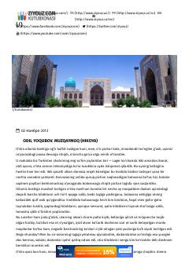

MQatag'on yillarida bir bolaning otasi bilan so'nggi uchrashuvini tasvirlovchi hikoya.
Bu hikoyada o'n yashar bola ko'zi bilan 1930-yillardagi qatag'on davri tasvirlanadi. Bola otasining mahkamasiga xabar yetkazgach, otasi unga muzqaymoq sotib olishni va'da qiladi — bu oddiy lahza chuqur hissiy ma'no kasb etadi. Asar oila boshiga tushgan og'ir kulfat fonida bolaning sodda, lekin teran kechinmalarini aks ettiradi.